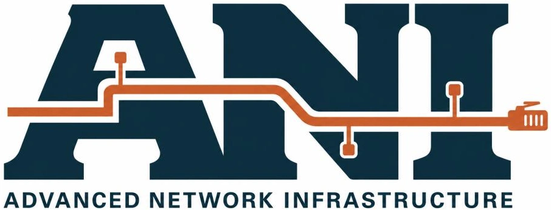

Arquitetura de redes
Dimensionamos a rede a partir dos setores, dos dispositivos e do tráfego de cada unidade.
Ver escopo
O projeto lógico reúne topologia, sub-redes IPv4 com VLSM, gateways, VLANs e requisitos de acesso.
Consultar plano lógicoProjetamos redes corporativas para conectar pessoas, sistemas e unidades com segurança e confiabilidade.

Dimensionamos a rede a partir dos setores, dos dispositivos e do tráfego de cada unidade.
O projeto lógico reúne topologia, sub-redes IPv4 com VLSM, gateways, VLANs e requisitos de acesso.
Consultar plano lógicoProjetamos a comunicação entre matriz e filial e a segmentação dos serviços internos.
O escopo inclui trunks, roteamento entre unidades, Wi-Fi corporativo e de visitantes e planejamento de VPN e controles de acesso.
Ver aplicação na Aura CapitalTestamos a conectividade em laboratório e dimensionamos equipamentos para a implantação.
Registramos testes no Packet Tracer, relacionamos os modelos simulados aos equipamentos reais e estimamos investimento e custos recorrentes.
Consultar dimensionamentoUma rede para levar os sistemas de pagamentos e gestão financeira da matriz até a equipe de atendimento da filial.
Abrir projeto completoEnlace simulado · 10.6.0.216/30
O Grupo 6 assina o planejamento, a homologação técnica e o dossiê executivo da rede da Aura Capital.

A Advanced Network Infrastructure é a consultoria de redes do Grupo 6, criada para o projeto acadêmico Enterprise Connect da Universidade Cruzeiro do Sul.
Conectar pessoas, sistemas e unidades com segurança, organização e confiabilidade.
O cabo de cobre atravessa as iniciais da ANI. Suas derivações fazem referência à topologia em barramento e representam as conexões que projetamos.
Endereço fictício do projeto acadêmico.
Universidade Cruzeiro do Sul
Av. Regente Feijó, 1295 · Vila Regente Feijó